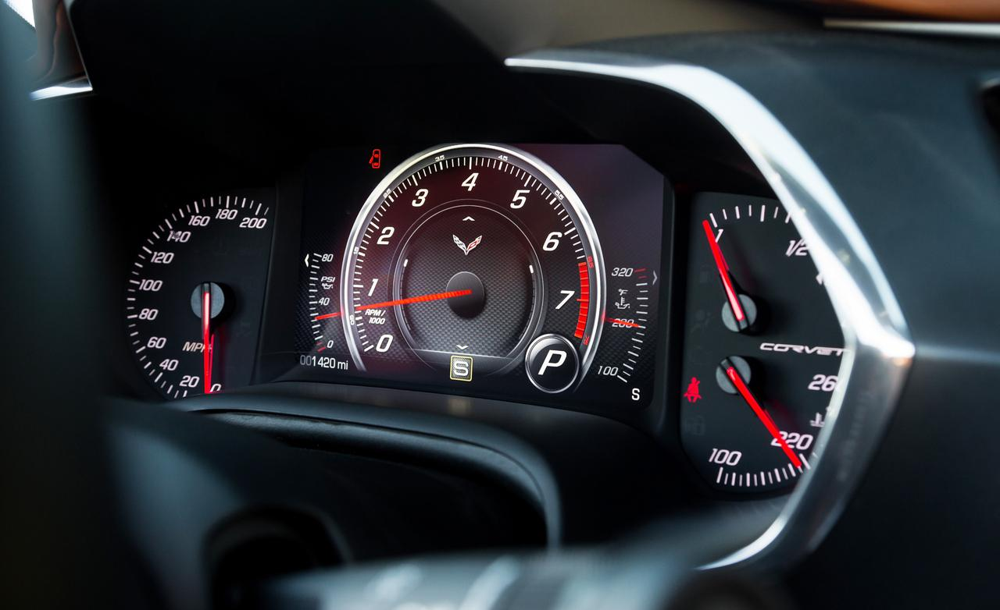
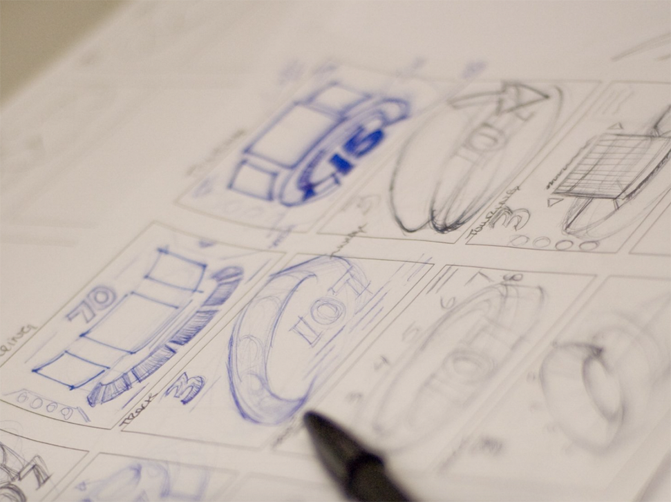
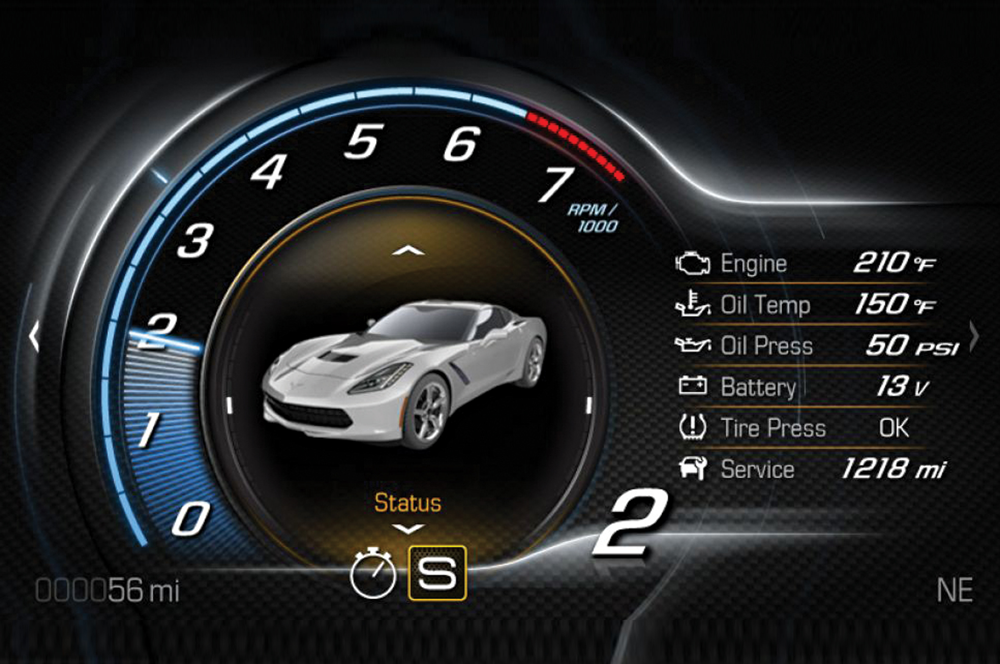
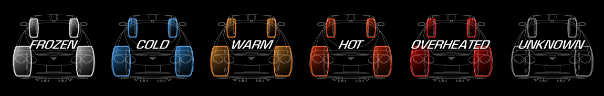
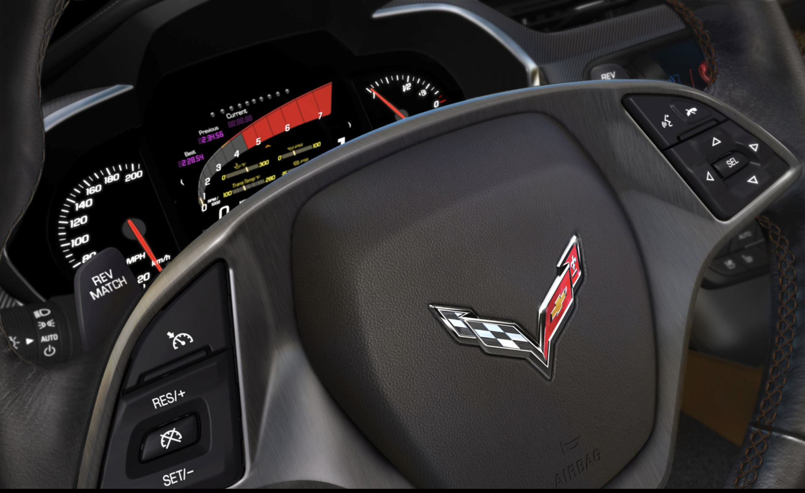
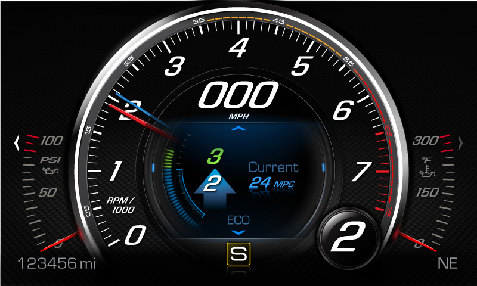
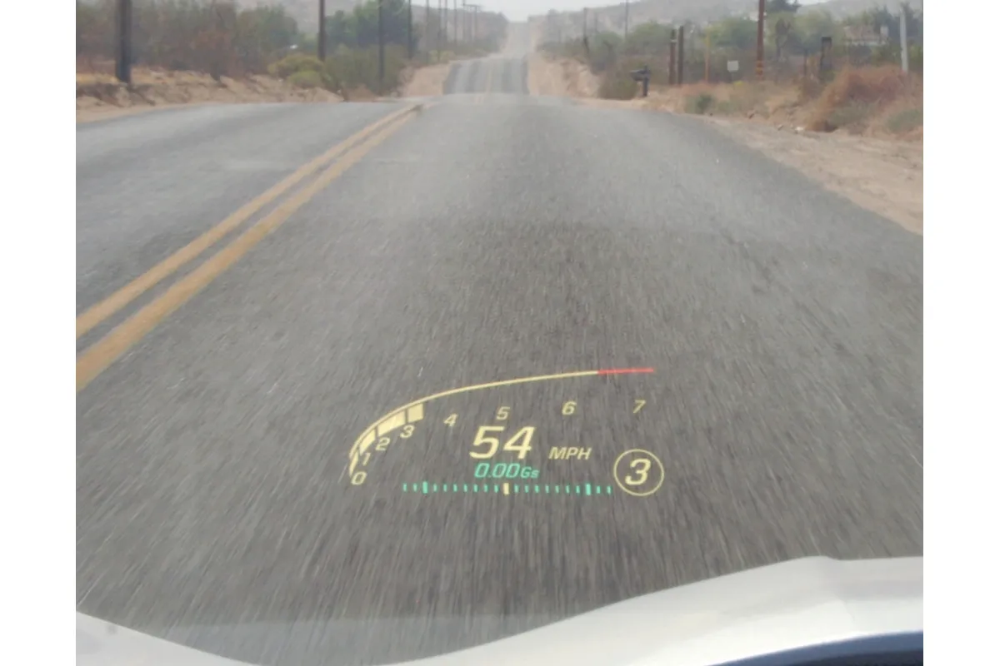

Designing a context-aware digital instrument cluster that balanced high-performance driving needs with everyday usability and unmistakable Corvette identity

The opportunity was to rethink the traditional instrument cluster as a dynamic, driver-centered experience rather than a fixed collection of gauges. Drivers needed instant comprehension in high-speed conditions while still supporting daily driving scenarios. Existing dashboards forced users to interpret dense information under pressure, regardless of driving context. What was missing was an adaptive system that prioritized the right information at the right time.
What made this uniquely difficult was the convergence of performance, safety, and emotional brand expectations within a tightly constrained embedded environment: limited processing power, strict automotive safety requirements, and competing priorities from engineering, performance teams, and brand leadership. Balancing the needs of experienced performance drivers with broader consumer usability expectations, without overwhelming either audience, was central to the design strategy.
Information priorities shifted depending on driving conditions — the interface had to know what mattered when.
I framed the cluster as a context-aware system rather than a static interface. Early work mapped how information priorities shifted across modes, identifying which data needed immediate prominence versus secondary access. I led collaboration across UX, industrial design, and embedded engineering to align visual hierarchy, interaction patterns, and system constraints. A central focus was reducing cognitive load while preserving flexibility for performance-oriented users.



A fully digital instrument cluster that adapts layout, hierarchy, and information emphasis based on the active driving mode — integrated with steering wheel controls, contextual menus, and HUD coordination to keep eyes on the road. The visual language draws from analog performance cues while working as a modern digital system, grounded in what the Corvette is.



The instrument cluster became a defining part of the C7 Corvette experience, demonstrating how embedded UX could support both emotional engagement and functional clarity across four distinct driving modes.
The work helped establish a more adaptive, software-driven approach to in-vehicle interfaces — demonstrating that a cluster designed around how drivers actually use the car can serve both performance and clarity without compromising either.